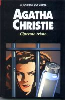

Cipreste Triste
Sad Cypress
À primeira vista, o amor parece ser a causa do assassinato de uma linda e atraente mulher. E todas as circunstâncias apontam como culpada uma outra jovem, igualmente encantadora, motivada em princípio pelo medo de perder o homem que ama. Mas nada costuma ser assim tão óbvio para o imbatível detetive belga Hercule Poirot, que põe suas “células cinzentas” em ação para elucidar mais este caso — e mostra que, por trás de sua aparência de homem frio e racionalista, esconde-se um grande sentimental.